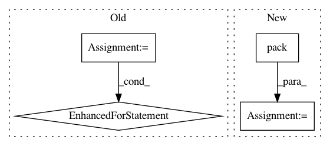

383ea0326ae103b5d5e0b62ed9c3cb18510c5b9e,distributed/comm/tcp.py,TCP,write,#TCP#Any#Any#Any#,229
Before Change
try:
nframes = len(frames)
lengths = [nbytes(frame) for frame in frames]
length_bytes = struct.pack(f"Q{nframes}Q", nframes, *lengths)
frames = [length_bytes, *frames]
lengths = [len(length_bytes), *lengths]
if sum(lengths) < 2 ** 17: // 128kiB
// small enough, send in one go
stream.write(b"".join(frames))
else:
// avoid large memcpy, send in many
for frame, frame_bytes in zip(frames, lengths):
// Can"t wait for the write() Future as it may be lost
// ("If write is called again before that Future has resolved,
// the previous future will be orphaned and will never resolve")
if frame_bytes:
future = stream.write(frame)
bytes_since_last_yield += frame_bytes
if bytes_since_last_yield > 32e6:
await future
bytes_since_last_yield = 0
except StreamClosedError as e:
self.stream = None
self._closed = True
if not shutting_down():
After Change
frames_nbytes = sum(map(nbytes, frames))
header = pack_frames_prelude(frames)
header = struct.pack("Q", nbytes(header) + frames_nbytes) + header
frames = [header, *frames]
frames_nbytes += nbytes(header)
if frames_nbytes < 2 ** 17: // 128kiB
// small enough, send in one go
frames = [b"".join(frames)]
try:
// trick to enque all frames for writing beforehand
for each_frame in frames:
each_frame_nbytes = nbytes(each_frame)
if each_frame_nbytes:
stream._write_buffer.append(each_frame)
stream._total_write_index += each_frame_nbytes
// start writing frames
stream.write(b"")
except StreamClosedError as e:
self.stream = None
self._closed = True
In pattern: SUPERPATTERN
Frequency: 3
Non-data size: 4
Instances
Project Name: dask/distributed
Commit Name: 383ea0326ae103b5d5e0b62ed9c3cb18510c5b9e
Time: 2021-02-17
Author: jakirkham@gmail.com
File Name: distributed/comm/tcp.py
Class Name: TCP
Method Name: write
Project Name: tensorpack/tensorpack
Commit Name: ba9d179311e86a6a7aed125970e7c5bd1c41627e
Time: 2019-08-21
Author: ppwwyyxx@users.noreply.github.com
File Name: tensorpack/dataflow/parallel.py
Class Name: _Worker
Method Name: run
Project Name: lanpa/tensorboardX
Commit Name: 05b17d125cfd1a0dddb2ae599a2eb72b39bedcf3
Time: 2019-04-16
Author: drothchild@berkeley.edu
File Name: tensorboardX/summary.py
Class Name:
Method Name: audio